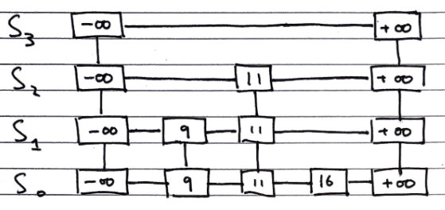
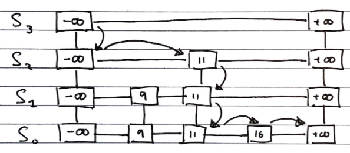
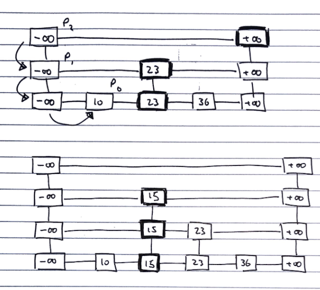
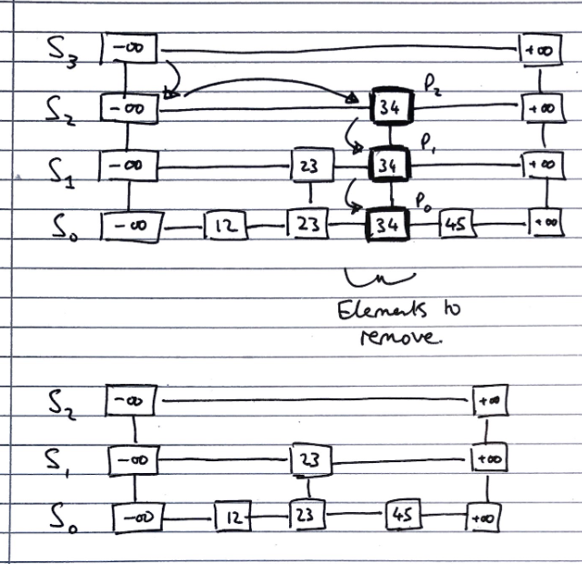
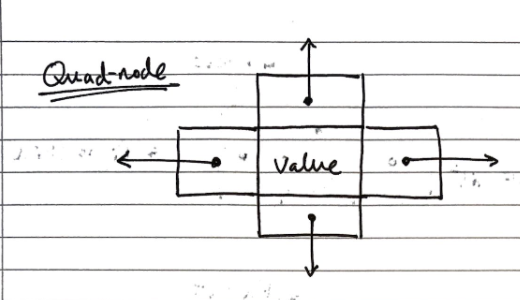

Motivations for skip lists
We want to be able to efficiently implement both searching, and insertion and deletion
For fast searching, we need the list to be sorted, and we have come across two concrete implementations of lists, but neither of which fulfil both of these goals.
- Sorted arrays
- Easy to search using binary search, since they are not indexable, needs \(O(log\ n)\) time
- Difficult insert/delete from, as elements need to be “shuffled up” to maintain ordering, needs \(O(n)\) time
- Sorted lists
- Easy to insert/delete from, assuming the position is known, needs \(O(1)\) time
- Difficult to search, since they are not indexable, needs \(O(n)\) time
Skip Lists (ADT)
Skip lists are composed from a number of sub-lists, which act as layers within them, which we denote by the set \(S = \{S_0, S_1, ..., S_h\}\) where \(h\) denotes the number of layers in the list, i.e. its “height”
-
All lists have a guard values \(+ \infty\) and \(- \infty\) at either end, and all the elements are in order between those values
-
The “bottom” list, \(S_0\) contains all the values in order between the guards
-
The “top” list, \(S_h\), contains only the guard values, \(+ \infty\) and \(- \infty\)
-
Each list \(S_i\) for \(0 < i < h\) (i.e. everything bar the top list, which contains only the guards, and the bottom list, which contains all elements) contains a random subset of the elements in the list below it, \(S_1\)
-
The probability of an element in \(S_i\) being in the list above it, \(S_{i+1}\), is \(0.5\)
A diagram of the structure of a skip list is shown below

Searching
To search for an value v in a skip list, we follow the algorithm
Algorithm search(k):
//Start at the minus-infinity guard of the top list
p <- skiplist.first()
Repeat
e <- p.next().element()
if e.key() == k
return e
else if e.key() > k
//Drop down to the next level
p <- p.below()
if p == null
return null
else //e.key() < k
//Scan Forward Step
p <- p.next()

Inserting
To insert a value v into a skip list, we follow the algorithm.
i <- number of flips of a fair coin before a head comes up
If i >= height of skip list
Add new, empty, sub-lists {S(h+1), ..., S(i+1)} to S
Using the search algorithm, we find v //even though we know it is not inserted
For every dropdown step, store the position of the element in an array
// This array stores the positions p(0) to p(i) of the
// largest element lesser than v of each sublist S(j)
For each sublist from 0 to i
Insert v into S(j) immediately after the position p(j) in array

Deleting
To delete a value v from a skip list, we follow the algorithm
Using search algorithm, find v in skiplist
Once found at position p,
while p.below() != null
hold <- p
delete(p) // Delete v from sublists below
p <- hold
Remove all but one list containing only guards from the top of the skip list

Implementation
We can use “quad-nodes”, which are similar to those used in linked lists, but with four pointers, instead of just one to store the entry, and links to the previous, next, below and above nodes:

Additionally, there are special guard nodes, with the values \(+ \infty\) and \(- \infty\), and fewer pointers, as they don’t have adjacencies on one side.
Performance
Space usage
Dependent on randomly generated numbers for how many elements are in high layers, and how high the layers are.
We can find the expected number of nodes for a skip list of \(n\) elements:
The probability of having \(i\) layers in the skip list is \(\frac{1}{2^i}\).
If the probability of any one of \(n\) entries being in a set is \(p\), the expected size of the set is \(n \cdot p\)
Hence, the expected size of a list \(S_i\) is \(\frac{n}{2^i}\)
This gives the expected number of elements in the list as \(\sum_{i=0}^{h}(\frac{n}{2^i}),\) where \(h\) is the height.
We can express this as \(n \cdot \sum_{i=0}^{h}(\frac{1}{2^i}) \lt 2n\), and with the sum converging to a constant factor, so the space complexity is \(O(n)\).
Height
The height of a skip list of \(n\) items is likely to (since it is generated randomly) have a height of order \(O(log\ n)\).
We show this by taking a height logarithmically related to the number of elements, and showing that the probability of the skip list having a height greater than that is very small.
The probability that a layer \(S_i\) has at least one item is at most \(\frac{n}{2^i}\)
Considering a layer logarithmically related to the number of elements \(i = 3 \cdot log\ n\)
The probability of the layer \(S_i\) has at least one entry is at most \(\frac{n}{2^{3 \cdot log\ n}} = \frac{n}{n^3} = \frac{1}{n^2}\)
Hence, the probability of a skip list of \(n\) items having a height of more than \(3 \cdot log\ n\) is at most \(\frac{1}{n^2}\), which tends to a negligibly small number very quickly.
Search time
The search time is proportional to the number of steps scan forward and drop down steps.
In the worst case, both dimensions have to be totally traversed, if the item is both bigger than all other items, or not present.
The number of drop down steps is bounded by the height so it is trivial to see that it is \(\approx O(log\ n)\) with high probability,
To analyse the scan-forward step, firstly recall that given an item in sub-list \(i\), its probability of being in sub-list \((i-1)\) as well is ½.
Let’s say that we scanned \(n_i\) keys at sub-list \(i\) before we dropped down a level to \((i -1)\). Each subsequent key that we scan forward to cannot exist in \((i-1)\), otherwise we would have already seen it.
A probabilistic fact is that the expected number of keys we will encounter at \((i-1)\) is 2 which is an \(O(1)\) operation per sub-list. Why?
Hence, the expected number of scan forward steps in total is \(O(log\ n)\) because the number of sub-list is the height of the skiplist.
Hence, the total search time is \(O(log\ n)\).
Update time
Since the insert and delete operations are both essentially wrappers around the search operation, and all of their additional functionality is of \(O(log\ n)\) or better, the time complexity is the same as the search function
Expectation Explanation
FYI ONLY. The source of this explanation is by JMoravitz on Stack Exchange (Accessed 16 May 2021)
Let X be a discrete random variable with possible outcomes:
\(x1,x2,x3,…,xi,…\) with associated probabilities \(p1,p2,p3,…,pi,…\)
The expected value of \(f(X)\) is given as: \(E[f(X)] = \sum\limits_{i\in\Delta} f(x_i)p_i\)
For our example, we are examining the number of items we expect to see in both sub-list \(i\) and \((i-1)\).
Hence, \(X\) could be \(1,2,3,\ldots,n\) with corresponding probabilities \(\frac{1}{2},\frac{1}{4},\frac{1}{8},\dots,\frac{1}{2^n}\)
So, the expected value of \(X\) is: \(E[X] = \sum\limits_{i=1}^n i(\frac{1}{2})^i\). As \(n\rightarrow \infty\), \(E[X] \rightarrow 2\).
This is a well known infinite sum of the form \(\sum\limits_{i=1}^\infty i p (1-p)^{i-1}=\frac1p\)
To prove this:
\[\sum\limits_{i=1}^\infty i p (1-p)^{i-1} = p\sum\limits_{i=1}^\infty i (1-p)^{i-1}\\ = p\left(\sum\limits_{i=1}^\infty (1-p)^{i-1} + \sum\limits_{i=2}^\infty (1-p)^{i-1} + \sum\limits_{i=3}^\infty (1-p)^{i-1} + \dots\right)\\ = p\left[(1/p)+(1-p)/p+(1-p)^2/p+\dots\right]\\ = 1 + (1-p)+(1-p)^2+\dots\\ =\frac{1}{p}\]